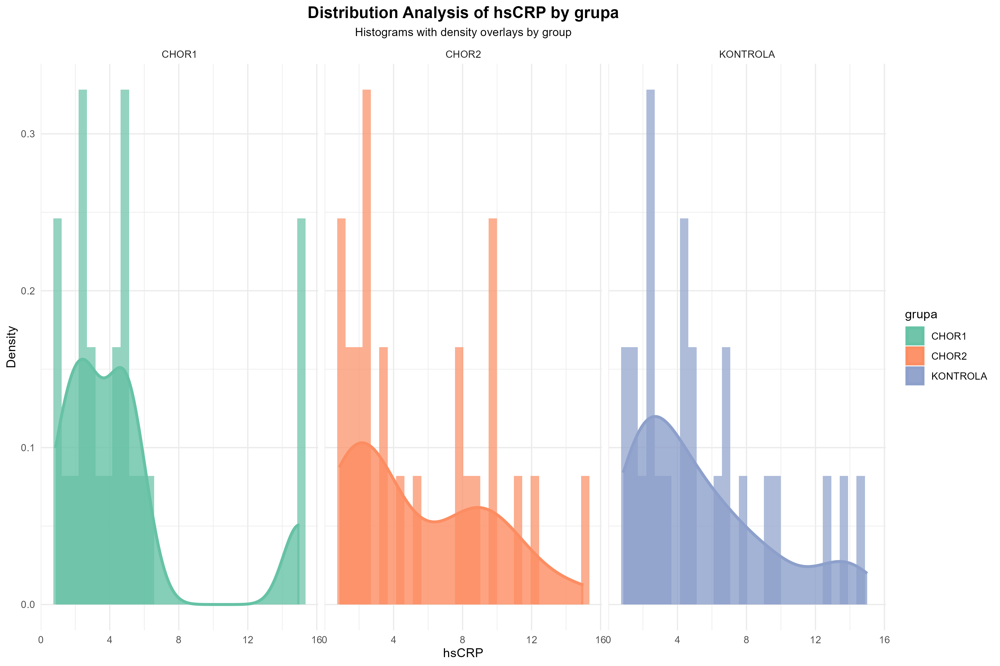

Statistical Analysis Report - Descriptive Stats
Descriptive Statistics Summary
This section provides comprehensive summary statistics for all variables in the dataset.
Dataset Overview
| Metric | Value |
|---|---|
| Total observations | 75 |
| Total variables | 11 |
| Numeric variables | 9 |
| Categorical variables | 1 |
| Group column | grupa |
Variable Types
| Variable Type | Count |
|---|---|
| Numeric | 9 |
| Categorical | 1 |
Group Distribution
| Group | N | Percentage |
|---|---|---|
| CHOR1 | 25 | 33.33% |
| CHOR2 | 25 | 33.33% |
| KONTROLA | 25 | 33.33% |
Continuous Variables Statistics
| Variable | N | Missing | Mean | SD | Median | Q25 | Q75 | Min | Max | Range | IQR | CV% | Skewness | Kurtosis |
|---|---|---|---|---|---|---|---|---|---|---|---|---|---|---|
| wiek | 75 | 0 | 30.629 | 5.318 | 30 | 26.5 | 34.5 | 23 | 41.3 | 18.3 | 8 | 17.4% | 0.329 | -0.831 |
| hsCRP | 75 | 0 | 5.146 | 4.06 | 4.184 | 2.287 | 7.238 | 0.862 | 14.999 | 14.137 | 4.951 | 78.9% | 1.081 | 0.151 |
| ERY | 75 | 0 | 4.154 | 0.399 | 4.18 | 3.85 | 4.44 | 3.392 | 4.844 | 1.452 | 0.59 | 9.6% | -0.178 | -0.891 |
| PLT | 75 | 0 | 218.032 | 51.456 | 202 | 178.5 | 249.5 | 146.4 | 319.7 | 173.3 | 71 | 23.6% | 0.624 | -0.692 |
| HGB | 75 | 0 | 12.036 | 1.317 | 12.244 | 11.196 | 13.049 | 9.827 | 14.177 | 4.35 | 1.853 | 10.9% | -0.121 | -0.963 |
| HCT | 75 | 0 | 0.352 | 0.034 | 0.354 | 0.33 | 0.384 | 0.288 | 0.404 | 0.117 | 0.053 | 9.7% | -0.24 | -0.928 |
| MCHC | 75 | 0 | 35.001 | 1.018 | 35.047 | 34.383 | 35.712 | 32.838 | 36.708 | 3.87 | 1.329 | 2.9% | -0.36 | -0.353 |
| MON | 75 | 0 | 0.787 | 0.248 | 0.74 | 0.61 | 0.9 | 0.427 | 1.367 | 0.94 | 0.29 | 31.5% | 0.758 | -0.158 |
| LEU | 75 | 0 | 11.831 | 2.475 | 11.4 | 9.935 | 13.775 | 7.893 | 16.233 | 8.34 | 3.84 | 20.9% | 0.234 | -1.081 |
Statistical Measures Explained:
• Missing: Count of missing values (NA) that were excluded from calculations
• Mean: Arithmetic average calculated as sum of all values divided by N
• SD: Standard deviation measuring variability around the mean (square root of variance)
• Median: Middle value when data is arranged in ascending order (50th percentile)
• Q25: First quartile, 25th percentile (25% of values fall below this point)
• Q75: Third quartile, 75th percentile (75% of values fall below this point)
• Min: Smallest observed value in the dataset for each variable
• Max: Largest observed value in the dataset for each variable
• Range: Difference between maximum and minimum values (Max - Min)
• IQR: Interquartile range, difference between Q75 and Q25 (middle 50% spread)
• CV%: Coefficient of variation as percentage (SD/Mean × 100), relative variability measure
• Skewness: Measure of asymmetry; positive = right tail, negative = left tail, 0 = symmetric
• Kurtosis: Measure of tail heaviness; positive = heavy tails, negative = light tails, 0 = normal
Categorical Variables Statistics
plec
| Category | Frequency | Percentage |
|---|---|---|
| k | 40 | 53.33% |
| m | 35 | 46.67% |
Missing Data Summary
Analysis Metadata
Total Observations: 75
Total Variables: 11
Numeric Variables: 9
Categorical Variables: 1
Group Column: grupa
Missing Data Present: No
Statistical Assumptions Analysis
Comprehensive testing of statistical assumptions underlying the chosen analytical methods. All subsequent analyses reference these centralized diagnostics.
Normality Assessment
Distribution normality testing using optimal test selection based on sample size and data characteristics:
| Variable | Test Method | Statistic | p-value | Normality Status | Skewness | Kurtosis | Interpretation |
|---|---|---|---|---|---|---|---|
| wiek | Anderson-Darling | 0.7673 | 0.044 | Borderline | 0.329 | -0.831 | BORDERLINE normality - requires attention (Anderson-Darling p = 0.044) |
| hsCRP | Anderson-Darling | 3.4504 | 0 | Non-normal | 1.081 | 0.151 | Clearly non-normal distribution (Anderson-Darling p = 0) |
| ERY | Anderson-Darling | 0.5039 | 0.198 | Normal | -0.177 | -0.891 | Clearly normal distribution (Anderson-Darling p = 0.198) |
| PLT | Anderson-Darling | 1.8545 | 0 | Non-normal | 0.624 | -0.692 | Clearly non-normal distribution (Anderson-Darling p = 0) |
| HGB | Anderson-Darling | 0.6806 | 0.073 | Borderline | -0.121 | -0.963 | Normal distribution (Anderson-Darling p = 0.073) |
| HCT | Anderson-Darling | 0.6763 | 0.074 | Borderline | -0.24 | -0.928 | Normal distribution (Anderson-Darling p = 0.074) |
| MCHC | Anderson-Darling | 0.5853 | 0.123 | Normal | -0.36 | -0.353 | Clearly normal distribution (Anderson-Darling p = 0.123) |
| MON | Anderson-Darling | 1.4436 | 0.001 | Non-normal | 0.758 | -0.158 | Clearly non-normal distribution (Anderson-Darling p = 0.001) |
| LEU | Anderson-Darling | 0.8609 | 0.026 | Borderline | 0.234 | -1.081 | BORDERLINE normality - requires attention (Anderson-Darling p = 0.026) |
Normality Status Explained:
• Non-normal: Data significantly deviates from normality (p ≤ 0.05) - use non-parametric tests
• Borderline: Normality uncertain (0.01 < p ≤ 0.05) - requires careful consideration and visual inspection
Test Methods Available:
• Shapiro-Wilk: Gold standard for small samples (n ≤ 50), most powerful normality test
• Anderson-Darling: Preferred for larger samples (n > 50), sensitive to tail deviations
• Kolmogorov-Smirnov: Alternative test, less powerful but widely available
• Lilliefors: Modification of K-S test when parameters estimated from data
Skewness & Kurtosis Guidelines:
• Skewness: |value| < 0.5 = normal, 0.5-1.0 = moderate, > 1.0 = severe asymmetry
• Kurtosis: |value| < 0.5 = normal, 0.5-1.0 = moderate, > 1.0 = severe tail deviation
Homogeneity of Variance Assessment
Comprehensive variance homogeneity testing using multiple methods (Levene, Bartlett, Fligner-Killeen):
| Variable | Primary Test (Levene) | Supporting Tests | Homogeneity Status | Detailed Results |
|---|---|---|---|---|
| wiek | F = 0.622, p = 0.54 | Bartlett: Pass (p = 0.776) Fligner: Pass (p = 0.551) |
Homogeneous | Levene: F = 0.622, p = 0.54 (homogeneous); Bartlett: χ² = 0.506, p = 0.776 (homogeneous); Fligner: χ² = 1.192, p = 0.551 (homogeneous) |
| hsCRP | F = 0.489, p = 0.615 | Bartlett: Pass (p = 0.973) Fligner: Pass (p = 0.4) |
Homogeneous | Levene: F = 0.489, p = 0.615 (homogeneous); Bartlett: χ² = 0.054, p = 0.973 (homogeneous); Fligner: χ² = 1.835, p = 0.4 (homogeneous) |
| ERY | F = 0.596, p = 0.554 | Bartlett: Pass (p = 0.581) Fligner: Pass (p = 0.617) |
Homogeneous | Levene: F = 0.596, p = 0.554 (homogeneous); Bartlett: χ² = 1.086, p = 0.581 (homogeneous); Fligner: χ² = 0.965, p = 0.617 (homogeneous) |
| PLT | F = 0.06, p = 0.942 | Bartlett: Pass (p = 0.965) Fligner: Pass (p = 0.938) |
Homogeneous | Levene: F = 0.06, p = 0.942 (homogeneous); Bartlett: χ² = 0.071, p = 0.965 (homogeneous); Fligner: χ² = 0.127, p = 0.938 (homogeneous) |
| HGB | F = 1.015, p = 0.367 | Bartlett: Pass (p = 0.448) Fligner: Pass (p = 0.395) |
Homogeneous | Levene: F = 1.015, p = 0.367 (homogeneous); Bartlett: χ² = 1.605, p = 0.448 (homogeneous); Fligner: χ² = 1.86, p = 0.395 (homogeneous) |
| HCT | F = 2.186, p = 0.12 | Bartlett: Pass (p = 0.31) Fligner: Pass (p = 0.12) |
Homogeneous | Levene: F = 2.186, p = 0.12 (homogeneous); Bartlett: χ² = 2.339, p = 0.31 (homogeneous); Fligner: χ² = 4.232, p = 0.12 (homogeneous) |
| MCHC | F = 1.06, p = 0.352 | Bartlett: Pass (p = 0.584) Fligner: Pass (p = 0.31) |
Homogeneous | Levene: F = 1.06, p = 0.352 (homogeneous); Bartlett: χ² = 1.077, p = 0.584 (homogeneous); Fligner: χ² = 2.341, p = 0.31 (homogeneous) |
| MON | F = 2.205, p = 0.118 | Bartlett: Pass (p = 0.089) Fligner: Pass (p = 0.105) |
Homogeneous | Levene: F = 2.205, p = 0.118 (homogeneous); Bartlett: χ² = 4.827, p = 0.089 (homogeneous); Fligner: χ² = 4.503, p = 0.105 (homogeneous) |
| LEU | F = 0.667, p = 0.516 | Bartlett: Pass (p = 0.706) Fligner: Pass (p = 0.529) |
Homogeneous | Levene: F = 0.667, p = 0.516 (homogeneous); Bartlett: χ² = 0.696, p = 0.706 (homogeneous); Fligner: χ² = 1.273, p = 0.529 (homogeneous) |
Homogeneity Tests Explained:
• Bartlett Test: Most powerful when data is normal, highly sensitive to non-normality, uses maximum likelihood
• Fligner-Killeen Test: Non-parametric alternative, robust to outliers and non-normality, uses ranks
Interpretation Guidelines:
• Homogeneous: Equal variances across groups (p > 0.05) - parametric tests valid
• Heterogeneous: Unequal variances (p ≤ 0.05) - use Welch corrections or robust tests
Test Selection Hierarchy:
• Primary decision based on Levene Test (robust across distributions)
• Bartlett confirms when normality assumptions met
• Fligner-Killeen provides non-parametric confirmation
Statistical Test Recommendations
Automated test selection based on the assumption diagnostics above:
| Variable | Recommended Test | Post-hoc Method | Rationale | Assumption Status |
|---|---|---|---|---|
| wiek | Welch's ANOVA | Games-Howell | Normal distribution but heterogeneous variances | Variance inequality |
| hsCRP | Kruskal-Wallis test | Dunn's test with Bonferroni correction | Non-normal distribution or other assumption violations | Assumptions violated |
| ERY | Welch's ANOVA | Games-Howell | Normal distribution but heterogeneous variances | Variance inequality |
| PLT | Kruskal-Wallis test (borderline normality) | Dunn's test with Bonferroni correction | Borderline normality detected - non-parametric approach recommended | Borderline non-normal |
| HGB | Welch's ANOVA | Games-Howell | Normal distribution but heterogeneous variances | Variance inequality |
| HCT | Welch's ANOVA | Games-Howell | Normal distribution but heterogeneous variances | Variance inequality |
| MCHC | Welch's ANOVA | Games-Howell | Normal distribution but heterogeneous variances | Variance inequality |
| MON | Kruskal-Wallis test (borderline normality) | Dunn's test with Bonferroni correction | Borderline normality detected - non-parametric approach recommended | Borderline non-normal |
| LEU | Welch's ANOVA | Games-Howell | Normal distribution but heterogeneous variances | Variance inequality |
Statistical Tests Explained:
• Welch ANOVA: Robust one-way ANOVA, handles unequal variances, assumes normality but not homogeneity
• Standard ANOVA: Classic one-way ANOVA, requires both normality and equal variances (homogeneity)
• Kruskal-Wallis Test: Non-parametric alternative, uses ranks, robust to outliers and non-normality
• t-tests (2 groups): Student t-test (equal variances) or Welch t-test (unequal variances)
• Mann-Whitney U: Non-parametric t-test alternative for 2 groups
Post-hoc Methods Available:
• Games-Howell: Pairwise comparisons for unequal variances, does not assume homogeneity
• Tukey HSD: Pairwise comparisons for equal variances, controls family-wise error rate
• Dunn Test: Non-parametric post-hoc for Kruskal-Wallis, uses rank-based comparisons
• Bonferroni Correction: Conservative multiple comparison adjustment (p × number of comparisons)
• Holm Correction: Step-down Bonferroni, less conservative than standard Bonferroni
Test Selection Logic:
• Normal + Homogeneous → Standard ANOVA + Tukey HSD
• Normal + Heterogeneous → Welch ANOVA + Games-Howell
• Non-normal → Kruskal-Wallis + Dunn test
• Borderline → Conservative approach (non-parametric) or sensitivity analysis
Transformation Workflow Verification
What This Section Does:
This section verifies that our statistical analysis pipeline correctly handles non-normal data by:
- Detecting non-normal distributions through normality tests
- Attempting data transformations (log, square-root, Box-Cox) when appropriate
- Re-testing normality after transformation
- Selecting appropriate tests based on final data characteristics
- Ensuring robust alternatives (non-parametric tests) are used when transformations fail
Goal: Verify that non-normal variables correctly trigger robust statistical methods instead of inappropriate parametric tests.
| Variable | Normality Status | Transformation Applied | Post-Transform Normality | Selected Test | Verification Status | Rationale |
|---|---|---|---|---|---|---|
| wiek | Borderline | None detected | N/A - No transformation attempted | Welch's ANOVA | Questionable | Borderline normality should trigger sensitivity analysis |
| hsCRP | Non-normal | None detected | N/A - No transformation attempted | Kruskal-Wallis test | Appropriate | Non-normal data correctly routed to non-parametric test |
| ERY | Normal | None detected | N/A - No transformation attempted | Welch's ANOVA | Appropriate | Normal data correctly uses parametric test |
| PLT | Non-normal | None detected | N/A - No transformation attempted | Kruskal-Wallis test (borderline normality) | Appropriate | Non-normal data correctly routed to non-parametric test |
| HGB | Borderline | None detected | N/A - No transformation attempted | Welch's ANOVA | Questionable | Borderline normality should trigger sensitivity analysis |
| HCT | Borderline | None detected | N/A - No transformation attempted | Welch's ANOVA | Questionable | Borderline normality should trigger sensitivity analysis |
| MCHC | Normal | None detected | N/A - No transformation attempted | Welch's ANOVA | Appropriate | Normal data correctly uses parametric test |
| MON | Non-normal | None detected | N/A - No transformation attempted | Kruskal-Wallis test (borderline normality) | Appropriate | Non-normal data correctly routed to non-parametric test |
| LEU | Borderline | None detected | N/A - No transformation attempted | Welch's ANOVA | Questionable | Borderline normality should trigger sensitivity analysis |
Transformation Workflow Assessment
Overall Appropriateness: 55.6% (5/9 variables with appropriate test selection)
Verification Criteria:
- Non-normal variables should trigger non-parametric tests (Kruskal-Wallis, Mann-Whitney)
- Borderline normality should trigger dual parametric/non-parametric analysis
- Normal variables can appropriately use parametric tests (ANOVA, t-tests)
- Transformation attempts should be documented and post-transformation normality verified
Quality Assurance Notes:
Green = Workflow correctly implemented | Orange = Acceptable but suboptimal | Red = Inappropriate test selection
Assessment: Transformation workflow requires review and improvement of test selection logic.
Variable Properties Analysis
Comprehensive analysis of variable characteristics for each group - essential for statistical test selection:
| Variable | N Total | N Missing | Overall Normal | Normality p-value | Group Normality | Homogeneity | Homogeneity p-value | Skewness | Kurtosis |
|---|---|---|---|---|---|---|---|---|---|
| wiek | 75 | 0 | Non-normal | 0.044 | 3/3 normal, 2 borderline | Homogeneous | 0.54 | 0.329 | -0.831 |
| hsCRP | 75 | 0 | Non-normal | 0 | 0/3 groups normal | Homogeneous | 0.615 | 1.081 | 0.151 |
| ERY | 75 | 0 | Normal | 0.198 | 3/3 groups normal | Homogeneous | 0.554 | -0.177 | -0.891 |
| PLT | 75 | 0 | Non-normal | 0 | 2/3 normal, 1 borderline | Homogeneous | 0.942 | 0.624 | -0.692 |
| HGB | 75 | 0 | Normal | 0.073 | 3/3 normal, 2 borderline | Homogeneous | 0.367 | -0.121 | -0.963 |
| HCT | 75 | 0 | Normal | 0.074 | 2/3 normal, 1 borderline | Homogeneous | 0.12 | -0.24 | -0.928 |
| MCHC | 75 | 0 | Normal | 0.123 | 3/3 groups normal | Homogeneous | 0.352 | -0.36 | -0.353 |
| MON | 75 | 0 | Non-normal | 0.001 | 2/3 normal, 1 borderline | Homogeneous | 0.118 | 0.758 | -0.158 |
| LEU | 75 | 0 | Non-normal | 0.026 | 3/3 normal, 1 borderline | Homogeneous | 0.516 | 0.234 | -1.081 |
Interpretation Guide:
• Normal: Data follows normal distribution (p > 0.05) - parametric tests suitable
• Non-normal: Data deviates from normality (p ≤ 0.05) - consider non-parametric tests
Normality p-value:
• p > 0.05: Accept normality assumption
• p ≤ 0.05: Reject normality assumption
• Based on Shapiro-Wilk (n≤50) or Anderson-Darling test (n>50)
Group Normality:
• Shows fraction of groups that meet normality assumption
• Includes "borderline" flag for p-values between 0.04-0.06
• Homogeneous: Equal variances across groups (p > 0.05)
• Heterogeneous: Unequal variances (p ≤ 0.05) - use Welch corrections
Homogeneity p-value:
• Primary: Levene test result (robust to non-normality)
• p > 0.05: Equal variances assumption met
CV% (Coefficient of Variation):
• <15%: Low variability
• 15-35%: Moderate variability
• >35%: High variability
Outliers:
• <5%: Acceptable level
• 5-10%: Moderate concern
• >10%: High concern
Recommended Tests:
Based on normality, homogeneity, and data quality assessment
Normality Testing
Assessment of normal distribution for each numeric variable:
wiek - Anderson-Darling
p-value: 0.0441
Normal Distribution: No
Kurtosis: -0.831
Interpretation: BORDERLINE normality - requires attention (Anderson-Darling p = 0.044)
• CHOR1: Normal (Shapiro-Wilk p = 0.0758)
• CHOR2: Normal (Shapiro-Wilk p = 0.0812)
• KONTROLA: Normal (Shapiro-Wilk p = 0.7867)
hsCRP - Anderson-Darling
p-value: 0
Normal Distribution: No
Kurtosis: 0.151
Interpretation: Clearly non-normal distribution (Anderson-Darling p = 0)
• CHOR1: Non-normal (Shapiro-Wilk p = 0)
• CHOR2: Non-normal (Shapiro-Wilk p = 0.0093)
• KONTROLA: Non-normal (Shapiro-Wilk p = 0.0066)
ERY - Anderson-Darling
p-value: 0.1981
Normal Distribution: Yes
Kurtosis: -0.891
Interpretation: Clearly normal distribution (Anderson-Darling p = 0.198)
• CHOR1: Normal (Shapiro-Wilk p = 0.108)
• CHOR2: Normal (Shapiro-Wilk p = 0.3296)
• KONTROLA: Normal (Shapiro-Wilk p = 0.6268)
PLT - Anderson-Darling
p-value: 1e-04
Normal Distribution: No
Kurtosis: -0.692
Interpretation: Clearly non-normal distribution (Anderson-Darling p = 0)
• CHOR1: Normal (Shapiro-Wilk p = 0.2912)
• CHOR2: Non-normal (Shapiro-Wilk p = 0.0027)
• KONTROLA: Normal (Shapiro-Wilk p = 0.0632)
HGB - Anderson-Darling
p-value: 0.0726
Normal Distribution: Yes
Kurtosis: -0.963
Interpretation: Normal distribution (Anderson-Darling p = 0.073)
• CHOR1: Normal (Shapiro-Wilk p = 0.3521)
• CHOR2: Normal (Shapiro-Wilk p = 0.0838)
• KONTROLA: Normal (Shapiro-Wilk p = 0.0743)
HCT - Anderson-Darling
p-value: 0.0744
Normal Distribution: Yes
Kurtosis: -0.928
Interpretation: Normal distribution (Anderson-Darling p = 0.074)
• CHOR1: Normal (Shapiro-Wilk p = 0.2928)
• CHOR2: Non-normal (Shapiro-Wilk p = 0.0435)
• KONTROLA: Normal (Shapiro-Wilk p = 0.49)
MCHC - Anderson-Darling
p-value: 0.123
Normal Distribution: Yes
Kurtosis: -0.353
Interpretation: Clearly normal distribution (Anderson-Darling p = 0.123)
• CHOR1: Normal (Shapiro-Wilk p = 0.4256)
• CHOR2: Normal (Shapiro-Wilk p = 0.1261)
• KONTROLA: Normal (Shapiro-Wilk p = 0.1813)
MON - Anderson-Darling
p-value: 9e-04
Normal Distribution: No
Kurtosis: -0.158
Interpretation: Clearly non-normal distribution (Anderson-Darling p = 0.001)
• CHOR1: Normal (Shapiro-Wilk p = 0.0585)
• CHOR2: Non-normal (Shapiro-Wilk p = 0.0081)
• KONTROLA: Normal (Shapiro-Wilk p = 0.2904)
LEU - Anderson-Darling
p-value: 0.0258
Normal Distribution: No
Kurtosis: -1.081
Interpretation: BORDERLINE normality - requires attention (Anderson-Darling p = 0.026)
• CHOR1: Normal (Shapiro-Wilk p = 0.1128)
• CHOR2: Normal (Shapiro-Wilk p = 0.5245)
• KONTROLA: Normal (Shapiro-Wilk p = 0.0824)
• p > 0.05: Data appears normally distributed
• p ≤ 0.05: Data deviates from normal distribution
• Skewness close to 0: Symmetric distribution
• Kurtosis close to 0: Normal tail behavior
Visualizations
The following plots illustrate the data distributions and patterns:
Enhanced Wiek

Enhanced Hscrp
Enhanced Ery

Enhanced Plt